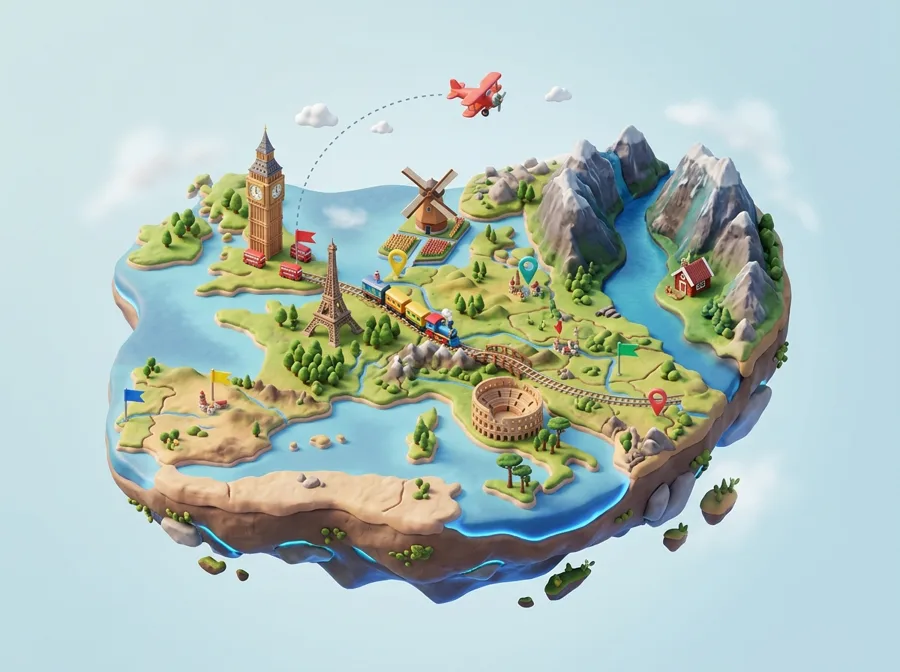
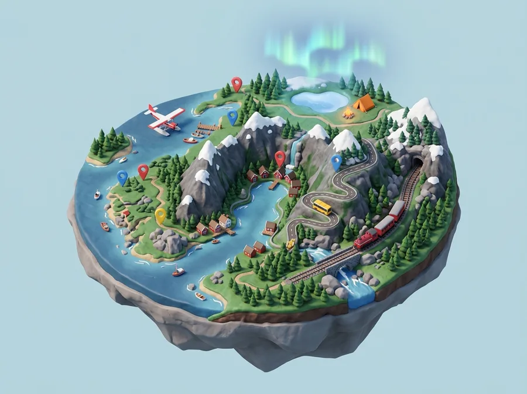
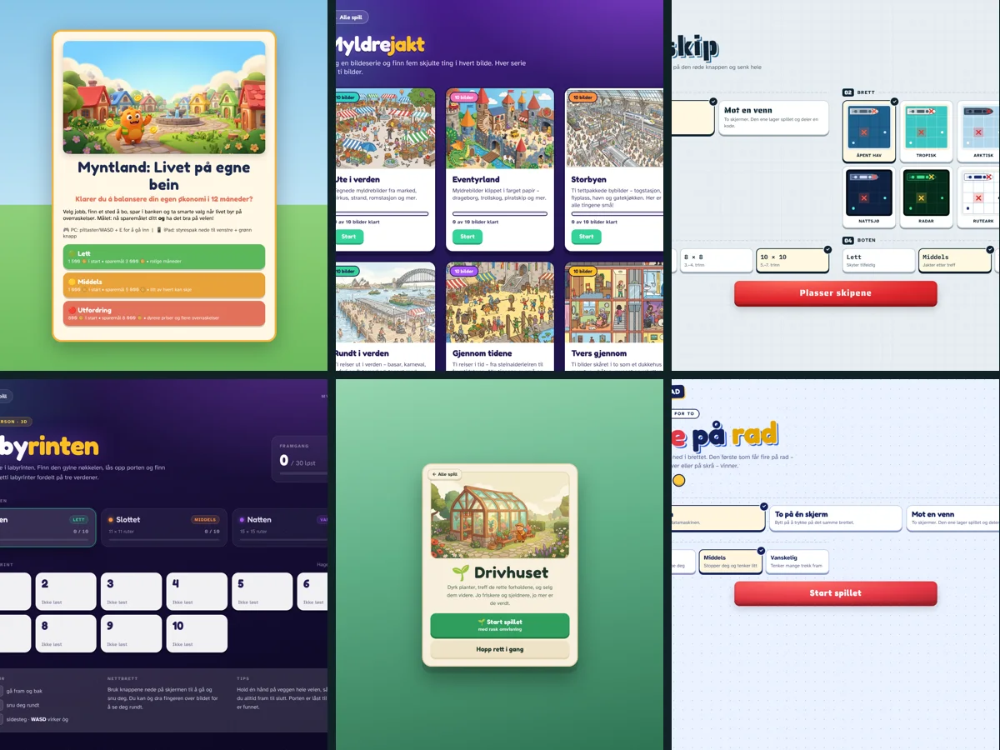
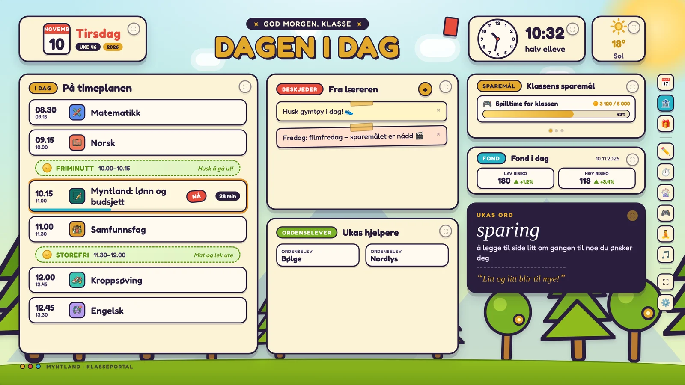
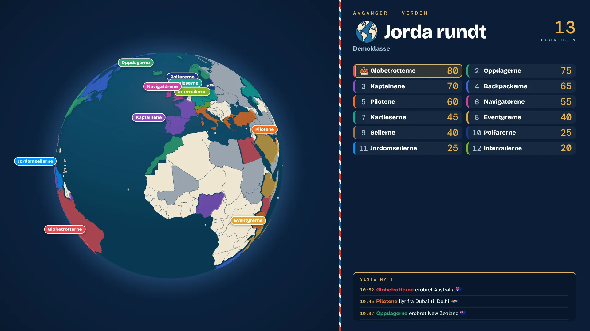
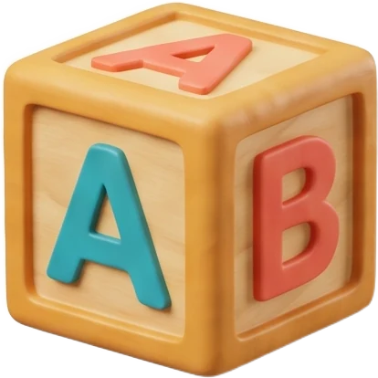
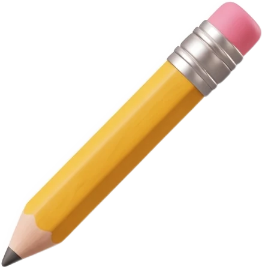

Klasseprosjekt · Kroppsøving
Erobre nabolaget
Lagene erobrer gateskilt i nabolaget og laster opp bevis. Kan spilles av hvem som helst.
ÅpneSkoleressurser fra klasserommet
Spill, store klasseprosjekter og lærerverktøy for barneskolen – laget av en lærer og testet i ekte klasserom.
Klasseromsøkonomi for 1.–7. trinn. Elevene har jobber, tjener mynter, sparer, låner og handler i klassebutikken – og lærer økonomi ved å leve den.
Store prosjekter og spill
Prosjekter som varer i uker, og spill som tar fem minutter.
Lagene erobrer gateskilt i nabolaget og laster opp bevis. Kan spilles av hvem som helst.
ÅpneReis verden rundt med 200 000 kroner i lomma. Book fly og hotell, fullfør reiseloggen – og erobre flest land før de andre gruppene.
Åpne
NyhetReis Europa rundt med 100 000 kroner i lomma – med fly, tog eller buss. 109 byer i 46 land venter på å bli erobret.
Åpne
NyhetReis Norge rundt med buss, tog, fly og Hurtigruta – eller sov i telt med allemannsretten. 72 steder fra Flekkefjord til Svalbard, og klassens eget hjemsted kan legges til.
Åpne
10 spillLivet på egne bein, Pizzabutikken, Slagskip, Fire på rad, Myldrejakt og flere – spill til en ledig stund i klasserommet.
Se alle spillene Skreddersydd
SkreddersyddEn egen elevside bygget rundt det eleven elsker – dinosaurer, hester, fotball – med oppgaver laget for akkurat det eleven trenger å øve på.
Les merPresentasjoner, oppgaver og prøver samlet på ett sted – klart til bruk i timen.
Kommer snartEkte skjermbilder
Slik ser verktøyene ut når klassen bruker dem – ikke illustrasjoner, men det elevene faktisk får på skjermen.



Ærlig talt
Hei! Jeg heter Espen og er lærer på 7. trinn. Jeg lager det jeg selv savner i undervisningen, og jeg bruker KI for å få det til. Det sier jeg like gjerne med en gang.
Elevdata sendes aldri til KI. KI brukes når jeg lager verktøyene – ikke når elevene bruker dem.
Behovene, pedagogikken og oppleggene er mine – bygget på LK20 og det jeg ser i klassen hver dag.
Jeg bruker KI til å programmere og lage illustrasjoner. Det gjør at én lærer kan lage det som før krevde et helt team.
Alt prøves ut i egen klasse før det havner her, og justeres etter hva elevene faktisk gjør.
Jeg holder kurs om hvordan lærere kan lage egne verktøy med KI – uten å kunne koding.
Hyllene på loftet

Livet på egne bein, Pizzabutikken, Drivhuset, Slagskip, Fire på rad, Gjett hvem, Ordjakt og flere.
Timeplanlegger, sjakkturnering, relasjonskart for lærerteam, valgfag og arbeidsark-sporing.
Jorda rundt, Erobre nabolaget og læringsverdener som Dinoparken og Lyslaget.

KommerArbeidshefter, årsplaner og planleggere – klare til å skrive ut.